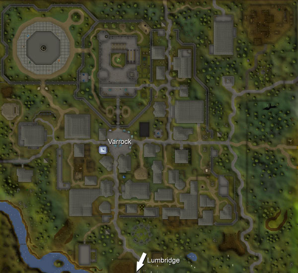

")
Varrock
Introduction | Location | Points of Interest | Personalities
Quests | In and Around Varrock | Miscellaneous
Quests | In and Around Varrock | Miscellaneous
Introduction

In the past, Misthalin has pushed back the dark menace from Morytania as well as ensuring that the inhabitants of the Wilderness remain in the desolate north. If either were to spill over the borders and into Misthalin, Varrock would be the first line of defence, and the single hope the world might have to stop them.
The city is not without its own problems, though, and the divide between the wealthy and the poor is like a great scar across the city. The southern half is full of thieves and the poverty-stricken, while the north, with the palace and fine shops, is populated by those who do not wish to see the dirtier parts of the city.
Location

Varrock lies immediately north of Lumbridge, where adventurers learn their trade. It also lies north-east of Draynor Village and Draynor Manor and east of Falador.
North of the city is the Wilderness, a lawless land of murderers, rogues and monsters.
Being an important city, there are a variety of ways to arrive at Varrock, whether on foot, teleporting, or beneath the ground.
Points of Interest

Varrock has possibly everything you could want from a city: the shops are well-stocked; members will find that there is the Sawmill Operator just to the north-east of the city; there are mines and Farming patches; there is a good handful of quests to be done.
Be sure to admire the palace while you're there; it's a massive structure with a number of guards and soldiers constantly training or on duty. You'll also note that the entire city looks prepared for an invasion - such is the price of sitting so close to the Wilderness and Morytania. Walking about near Varrock's eastern bank is a Town Crier, who is more than happy to explain the Rules of Conduct and the role of Player Moderators.
Almost certainly the grandest structure after the palace is the Grand Exchange, in the north-west of the city. There, traders from around RuneScape come to buy and sell, each hoping to find bargains and sell them for a tidy profit.
Provided you have completed Rune Mysteries, you can access the rune essence mine by having a quick chat with Aubury, who can be found in his rune shop in the south-east of the city. As there are only a very small number of people who can teleport you there, it's good to make sure you know where he lives.
South of the city is the Champions' Guild, which are constantly keeping an eye out for talented adventurers. They also have a couple of shops built into the building upstairs.
Aside from this, the guards and locals might prove intriguing to those interested in advancing their skills, so it's a good thing that the city is large enough to accommodate a good number.
Personalities

As the ruler of Misthalin, King Roald has his work cut out for him. He is constantly worried about this and that, and the dangers of Morytania forever weigh on his mind. He is generally a wise ruler, but has taken to listening to his advisors a bit too much in recent times.
|

Queen Ellamaria likes everyone to think that she comes from one of Misthalin's noble houses, so she is slightly less than pleasant to those she deems below her station (this means pretty much every adventurer that bothers her). She does love a nice garden, though, and hopes that King Roald will enjoy it with her.
|
|
| King Roald can be found in the throne room of Varrock Palace. | Members will find Queen Ellamaria in Varrock Palace's garden. |

Reldo is the Varrock Librarian. He has read almost every book in the library and probably knows more about RuneScape's history than anyone else - even the Wise Old Man. He's also eager to help out wandering adventurers, so if you think he could help out at all he's worth talking to.
|

The Varrock nobility works to a set of rules defined centuries ago. Sadly, some nobles - like Dimintheis - have fallen foul of these rules and been stripped of their land and property. He is quite a humble noble, and not adverse to accepting help from well-meaning adventurers, whatever their station in society.
|
|
| Reldo can be found in the library inside Varrock Palace. | Members will find Dimintheis in an extremely humble abode in the south-east of the city. |

Romeo is a romantic chap, constantly falling in and out of love with various ladies. He is always passionately devoted to them, but he's also quite hopeless when it comes to solving his own problems. His beloved's family are not particularly fond of him, but these star-cross'd lovers must be reunited.
|
Juliet is the current object of Romeo's affections, and believes she is deeply in love with Romeo. Her father, unfortunately, cannot stand Romeo (maybe it's his excessively romantic notions), and family rivalries get in the way of their love. Phillipa, Juliet's cousin, is not so pretty, but a rose by any other name would smell as sweet.
|
|
| Romeo can be found frantically seeking help in Varrock's market. | Juliet can be found in her family's house just west of the city. |

Father Lawrence is the city's priest of Saradomin, and likes nothing better than delivering a pious sermon to his attentive congregation. He is a close acquaintance of Romeo, and knows well the problems between Romeo's and Juliet's families. He is slightly obsessed with plans involving death, but they are no doubt useful in his line of work.
|

Gertrude is a good mother and an outstanding cat breeder. If you ever desire to one day raise a cat of your own, Gertrude is the woman to talk to. Her children, sadly, are rather more mercenary than this good woman.
|
|
| Father Lawrence can be found preaching in the church east of Varrock Palace. | Members can find Gertrude at her house west of the city. |

Like all good fortune-tellers and seers, Gypsy Aris is excellent at making your destiny seem clear. She's as old as anything else in RuneScape, so I suppose that means she probably knows what she's doing. Her only real flaw is that she won't let you forget just how young you are compared to her (although her dress sense could do with some tweaking, too).
|

Sir Prysin is, as he will no doubt tell you, a mighty knight of the realm. His exploits must be famous, and his might must be incredible - how else could he have managed to earn a room within the palace itself?
|
|
| Gypsy Aris can be found in her tent in the Varrock market. | Sir Prysin can be found around the bottom of the south-west tower of Varrock Palace. |

Captain Rovin is the head of the palace guards, so the King's safety falls squarely on his mighty shoulders. This is why he is so suspicious and intolerant of anyone that isn't a guard.
|
| Captain Rovin can be found in the north-west tower of Varrock Palace. |
Quests
The following quests can be started in Varrock:
- Demon Slayer
- Dragon Slayer
- Romeo and Juliet
- Shield of Arrav
- Priest in Peril (Members)
- The Family Crest (Members)
- Garden of Tranquillity (Members)
- Gertrude's Cat (Members)
- Rat Catchers (Members)
- What Lies Below (Members)
- All Fired Up (Members)
- Defender of Varrock (Members)
In and Around Varrock

Goblins are common creatures in RuneScape, and a bickering lot they are, too. If they could ever organise themselves properly and stop fighting each other, it is possible that they could threaten large towns, rather than just very young adventurers.
|

Giant rats are larger and nastier versions of the small rodents that cats enjoy preying upon. Their coarse fur is poor armour, and the yellow teeth that they attack with are not nearly as dangerous as they look. Giant rats should prove no difficulty to any but the least experienced adventurers.
|
|
| Goblins can be found west of the city. | Giants rats can be found lurking in the south-east of the city. |

The stone circle south of the city is widely known to be a place of great evil, where Zamorak's realm comes close to RuneScape. It is no surprise, then, that these black-robed wizards choose to spend much of their time preparing for demons and darkness to rise over the city. They are Magic users, so Ranged attacks work well against them.
|

Far more skilled than muggers, and better equipped courtesy of the two gangs in Varrock, the thieves are a cunning bunch that seem to rule the southern half of the city. They are not particularly dangerous, but those new to the city should probably try their weapon arm against easier foes.
|
|
| Dark wizards can be found in the stone circle south of Varrock. | Thieves can be found in the southern part of Varrock. |

Though bears are obviously a rare sight within the city limits, there are a few in the woods outside Varrock. They are large beasts with paws the size of a man's head, and tipped with razor-sharp claws. They should prove no difficulty to an adventurer with some experience.
|

Varrock has many guards, who typically keep watch over the gates, walls and palace. Combined with the entrenched defences, the city has the look of being permanently ready for war. This is as it should be, though, for if Varrock were ever caught unready, the whole of Misthalin would be open.
|
|
| Bears can be found north-west of the city. | Guards can be found throughout Varrock. |

Varrock does not rely solely on its guards, and within the palace may be found a small number of warrior women. They are more highly trained than the guards and feature better weapons and armour, which is probably why they are placed so close to King Roald.
|

The most sinister of knights, the Black Knights are not normally found so far from their castle or their underground headquarters. Despite this, there is a small number of them within Varrock's limits. No one knows what they are doing there, but no doubt some evil is afoot.
|
|
| Warrior women can be found in Varrock Palace. | Black knights can be found north of Varrock and in the Jolly Boar Inn. |
Miscellaneous
- There are dozens of items within Varrock - too many to list - so it's worth simply looking around to see what you can find.
- The Lumbermill, north-east of Varrock, and the real estate agent east of the palace are absolute essentials for members intending to build their own house.
- Members who wish to train up their cat can head to the rat pit in the far south-east of the city.
- If you have lost the quest reward from The Family Crest, return to Dimintheis and he will return it to you.
- Equally, if you lose Silverlight after Sir Prysin gives it to you in Demon Slayer, return to him to get it back.
- There are three altars in the city where you can pray to replenish your Prayer points.
- The Air Altar lies a little ways west of Varrock, by Sigurd the canoe maker.
- Varrock Palace has a small display within its walls that, when read, will tell you precisely how many guards have had their pay stolen recently.

More articles in
Cities and Towns
|
|